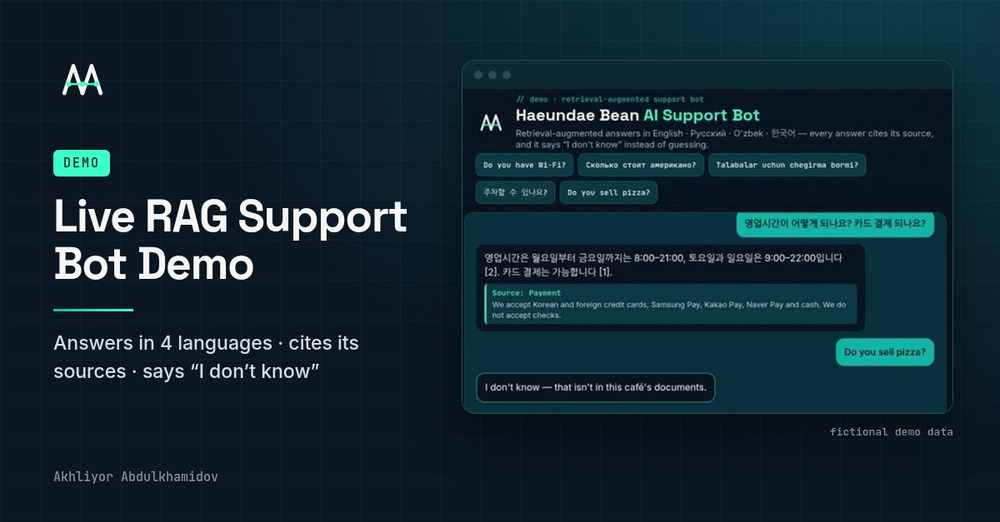

// live demo · retrieval-augmented support bot
Haeundae Bean AI Support Bot
AI support bot that answers in English, Russian, Uzbek and Korean from a business's own documents, cites the source, and says “I don't know” instead of guessing. Built by Akhliyor (Ali) Abdulkhamidov.

Open the live demo → Redirecting… · Demo uses fictional café data · Back to portfolio